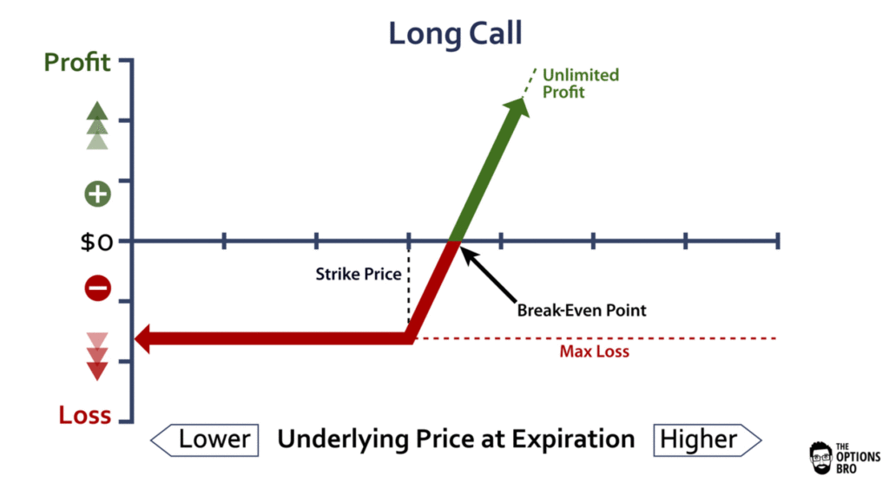
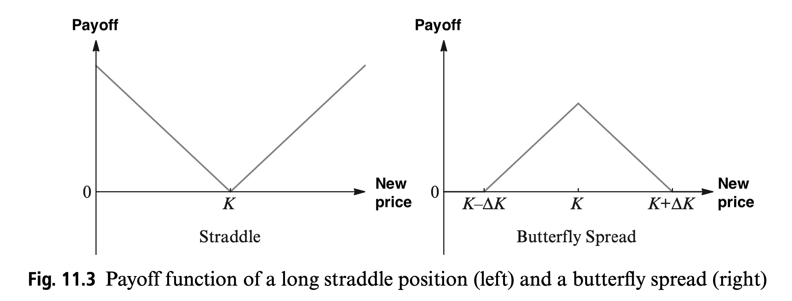
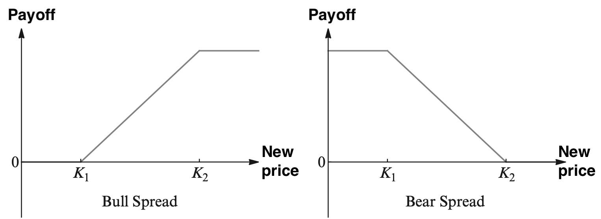

defi vs. sde
view markdownmisc fun
- winner’s curse - a phenomenon that may occur in common value auctions, where all bidders have the same (ex post) value for an item but receive different private (ex ante) signals about this value and wherein the winner is the bidder with the most optimistic evaluation of the asset and therefore will tend to overestimate and overpay
stock basics
- stock basics
- stocks prices fluctuate
- stocks can pay dividends quarterly
- common stocks may or may not pay dividends
- preferred stocks typically pay fixed dividends
- stock-market basics
- ETF = exchange-traded fund - tracks a specific index / sector of the market
- bear market - stock prices are falling
- bull market - stock prices are rising
- S & P averages 7% / year
individual events
- The GameStop Game Never Stops - Bloomberg
- 3 explanations: stock fundamentals, short squeeze + gamma trap make feedback loop, meme
- focal point (or Schelling point) is a solution that people tend to choose by default in the absence of communication
- there is a mass of retail buyers who like to all buy the same stock, and Musk’s tweet gave them a Schelling point to coordinate around
- SEC shut down Hertz selling shares after bankruptcy (stocks would become worthless)
economic measures
-
The Case For Degrowth - Current Affairs
- GDP Is Not a Measure of Human Well-Being
- if people are unusually healthy, the market value of medical services will go down
- even incredibly destructive pollution can improve GDP
- doesn’t measure inequality, or non-revenue value (e.g. firefighters)
- mainstream economics is premised on the idea that we all have “unlimited wants”
- Defending the Undefendable (Walter Block ) - there’s a market for what they do, therefore what they do is good - slumlords, blackmailers, corrupt cops, and drug pusher
- Hickel asks us to think of the growth of economies the way we would think of the growth of a human - a human needs to grow, but “growth” is not treated as the end goal
progress
-
[The World’s Most Annoying Man Current Affairs](https://www.currentaffairs.org/2019/05/the-worlds-most-annoying-man) - Steven pinker’s enlightment now argues that much progress has been made technologically to better mankind
ml in stock market
- Uncertainty-Aware Lookahead Factor Models for Quantitative Investing (chauhan, alberg, & lipton 2020)
- fundamentals - publicly traded companies report these periodically, e.g. revenue, earnings, debt, among others
- fundamentals forecasting - use LSTM to forecast fundamentals
- use model uncertainty to avert risk (scale the earnings forecast in inverse proportion to the modeled earnings variance)
- main fundamental to forecast is EBIT, but also forecast others for multi-task benefit
- given past januaries, predict next january
- fundamentals forecasting - use LSTM to forecast fundamentals
- factors - functions of the reported data that correlate with stock market performance
- stock selection part - given future fundamentals, can select stocks better than human-selected factors
- value investing - base investment on long-term fundamentals
- in this case, rank all stocks acording to factor and invest equal amounts into top 50, re-balancing monthly
- final improvement: compound annualized return of 17.7% vs 14.0% (standard factor model), CV on held-out stocks, test on held-out time period
- previous works have been limited to few stocks / short time periods
- uncertainty
- data uncertainty (aleatoric): DNN predicts mean + var as separate outputs
- both are used to calculate loss
- model uncertainty (epistemic): use MC dropout w/ 10 reps
- data uncertainty (aleatoric): DNN predicts mean + var as separate outputs
- fundamentals - publicly traded companies report these periodically, e.g. revenue, earnings, debt, among others
quant finance
based on book by mazzoni
basic background
- Wiener-process = Brownian motion: $W_t$
- $W_0=0$
- $W_t$ has independent increments (i.e. is Markov process)
- $W_t - W_s \sim N(0, t-s)$ for $0 \leq s < t$
- this implies $f(w)=\frac{1}{\sqrt{2 \pi(t-s)}} e^{-\frac{1}{2} \frac{w^{2}}{t-s}}$
- can use fourier analysis to easily compute things about sums of random variables
utility theory: see notes in decisions
- economic theory assumes agents maximix their personal utility, aims to provide framework for rational behavior
architecture of financial markets
- arrow-debreu problem (1954): maximize expected utility under wealth constraint
- must assume utility function
- lets us derive marginal rate of substitution MRS: tradeoff in utility between consumption today and consumption in the future
- portfolio selection problem
- payoff matrix $X$ is a $N x P$ matrix, with $P$ securities, each which takes on $N$ possible values and we ewant to find a vector $\theta \in \mathbb R^P$ that maximizes payoff subject to constraint
markowitz portfolio theory
- everything is embedded in Gaussian distributions
- assume in short term that different returns are independent (then their sums are normal)
- focuses on mean and variance of return distr. of risky assets over intermediate / long-term horizons
capital asset pricing model (CAPM) + arbitrage pricing theory (APT)
- CAPM - used to determine theoretical rate of return of an asset
- $E\left(R_{i}\right)=R_{f}+\beta_{i}\left(E\left(R_{m}\right)-R_{f}\right)
$
- $E\left(R_{i}\right)$ is the expected return on the capital asset
- $R_{f}$ is the risk-free rate of interest such as interest arising from government bonds
- $\beta_{i}$ is the sensitivity of the expected excess asset returns to the expected excess market returns, or also $\beta_{i}=\frac{\operatorname{Cov}\left(R_{i}, R_{m}\right)}{\operatorname{Var}\left(R_{m}\right)}=\rho_{i, m} \frac{\sigma_{i}}{\sigma_{m}}$
- $\rho_{i, m}$ denotes the correlation coefficient between the investment $i$ and the market $m$
- $\sigma_{i}$ is the standard deviation for the investment $i$
- $\sigma_{m}$ is the standard deviation for the market $m$.
- $E\left(R_{m}\right)$ is the expected return of the market
- overly simple
- $E\left(R_{i}\right)=R_{f}+\beta_{i}\left(E\left(R_{m}\right)-R_{f}\right)
$
-
APT - expected return is a linear function of various factors
-
$ \mathbb{E}\left(r{j}\right)=r{f}+\lambda{j 1} R P{1}+\lambda{j 2} R P{2}+\cdots+\lambda{j n} R P{n}$
- $R P_{n}$ is the risk premium of the factor,
- $r_{f}$ is the risk-free rate,
- $ r{j}=a{j}+\lambda{j 1} f{1}+\lambda{j 2} f{2}+\cdots+\lambda{j n} f{n}+\epsilon{j}$ where $a{j}$ is a constant for asset $j$ $ f{n}$ is a systematic factor $\lambda{j n}$ is the sensitivity of the $j$ th asset to factor $n,$ also called factor loading,
- and $\epsilon_{j}$ is the risky asset’s idiosyncratic random shock with mean zero.I diosyncratic shocks are assumed to be uncorrelated across assets and uncorrelated with the factors.
-
Arbitrage = practice of taking positive expected return from overvalued or undervalued securities in the inefficient market without any incremental risk and zero additional investments.
-
portfolio performance and management
- measure of portfolio performance
- Sharpe ratio $S_a = \frac{\mathbb E [R_a - R_b]}{\sigma_a}$: performance compared to a risk-free asset, adjusted for risk
- $R_a$ is asset return
- $R_b$ is risk-free benchmark return (e.g. U.S. Treasury security)
- $\sigma_a$ is the stddev of the excess return
- Sharpe ratio $S_a = \frac{\mathbb E [R_a - R_b]}{\sigma_a}$: performance compared to a risk-free asset, adjusted for risk
- management
- what proportion should be invested in risky part of portfolio?
- Kelly criterion - very good formula for bet sizing in long-term
financial economics
- explains how markets and prices of risky investments evolve
behavioral finance
- deviates from utility theory by factoring in psychological considerations and deviations from rationality
forwards, futures, and options
- derivatives are contracts whose value depends on the value of other securities, commodities, rates, or derivatives
- forwards - over-the-counter, settlement is at expiry or shortly after
- futures - standardized contract traded in an organized markets
- need to account for change in price over time (e.g. interest)
- options
- gives you option to buy a stock, but bounds losses
- call is analog of long (normal buying)
- put is analog of short

- compound positions


- protective put buying - limits dowside risk of a security/portfolio
- covered call writing -
binomial (CRR) model
- Cox-Ross-Rubeinstein model (CRR)
- simplification of brevious black-scholes model (1973)
- numerical method for valuation of options
- simulates discrete-time model of the varying price over time
black-scholes theory
- PDE for evolution of derivatives
- can derive closed-form
volatility (deterministic / stochastic)
processes with jumps
basic fixed-income instruments
- fixed-income instruments don’t have the option to have a risk-free asset as san alternative (e.g. putting money in a bank)
plain fixed-income derivatives
term structure models
LIBOR market model
private equity
Private Equity is an alternative investment class of capital for things not on public exchange (e.g. private companies, or buyouts of public companies). Can be nicer for entrepeneurs
- private equity firms make money by charging management and performance fees from investors in a fund
- like a hedge fund, managing partners take basic fees + profit percentage
- differs in that private equity invests directly in companies or buys a controlling interest (usually more long-term, lower risk)
- types
- venture capital is a type of private equity
- leveraged buyouts - most popular - buy company to improve it then resell it (to individual or in IPO)
- distressed funding - money given to struggling company to turn it around
misc books
bullshit jobs (by david graeber)
- “In the year 1930, John Maynard Keynes predicted that, by century’s end, technology would have adavanced sufficiently that counties like the US would have achieved a fifteen-hour work week”
- “layoffs and speed-ups invariably fall on that class of people who are actually making, moving, fixing, and maintaining things”
- “If 1 percent of the population controls most of the displosable wealth, what we call “the market” reflects what they think is useful or important”
- defining bullshit jobs
- “what would happen were this entire class of people to simply disappear?”
- survey question: “does your job ‘make a meaningful contribution to the world’? Astonishingly, more than a third–37 percent–said they believed that it did not”
- “a bullshit job is a form of paid employment that is so completely pointless, unnecessary, or pernicious that even the employee cannot justify its existence even though, as part of the conditions of employment, the employee feels obliged to pretend that this is not the case”
- bullshit jobs categorization
- flunkies - exist only or primarily to make someone else look or feel important
- e.g. unneeded doorman, receptionist, administrative assistants
- higher-ups’ importance will almost invariably be measured by total num employees working upder them
- goons - people whose jobs have an aggressive element but exist only bc other people employ them
- if no one had an army, armies would not be needed: same for lobbyists, PR specialists, telemarketers, corporate lawyers
- duct tapers - jobs exist only bc of a fault in the organization - solve a problem which shouldn’t exist
- ex. software dev for internal unused software
- box tickers - allow an organization to claim it is doing something it is not
- ex. fact-finding commision, gov. bureaucracy, making nice-looking reports
- taskmasters
- type 1 - assign work to others
- type 2 - create fake tasks for others to do
- managerialist ideologies in complex organizations require staff to keep the managerialist plates spinning
- flunkies - exist only or primarily to make someone else look or feel important
- misc
- one ex. “this is all just greed propped up by inflated prices of necessities”
- “most people who do a great deal of harm in the world are protected against the knowledge that they do so”
- at least in the traditional workplace, there was someone against whom you could direct your rage
- like Olympic endurance boredom for its own sake
- psychology
- when in a bullshit job, hard not to feel you’re being pressured/manipulated, with the added indignity that you’re also betraying the trust of someone whose side you should be on
- people who win lotteries rarely quit their jobs, and if they do regret it
- in priosns where inmates are not required to work, denying them work is often used as punishment
- childeren learn largely by understanding they can cause things to happen
- when causality is taken away in simple experiments, children become very upset
- schiller argued that the desire to create art is simply a manifestation of the urge to play as the exercise of freedom for its own sake as well
- scriptlessness - like guilt - people who had unrequited love during adolescence usually got overt it, but people who were the object of unrequited love often didn’t
- when in a bullshit job, hard not to feel you’re being pressured/manipulated, with the added indignity that you’re also betraying the trust of someone whose side you should be on
- moral logic
- idleness is not dangerous - idleness is theft
- in places without clocks, time is measured by actions rather than action being measured by time
- The Nuer have no expression equivalent to “time” in our language, and they cannot speak of time as though it were something actual
- the discipline of economics itself emerged out of moral philosophy (Adam Smith was a professor of moral philisophy) + moral philosophy came from theology
- politics
- “The main political reaction to our awareness that half the time we are engaged in utterly meaningless or even counterproductive activities–usually under the orders of a person we dislike–is to rankle with resentment over the fact there might be others out there who are not in the same trap”
- “as a result, hatred resentment, and suspicion have become the glue that holds society together”
- rights-scolding
- right-wing: criticize others for thinking the world owes them a living, medical treatment, maternity leave
- left-wing: check your privilege
- frightening monsters in popular do not simply threaten to hurt you but to turn you into a monster yourself (e.g. vampire, zombie)
- the joke under the soviet union was “we pretend to work; they pretend to pay us”
- “Puratinanism: the haunting fear that someone, somewhere, may be happy. – H.L. Menchken”
- “The main political reaction to our awareness that half the time we are engaged in utterly meaningless or even counterproductive activities–usually under the orders of a person we dislike–is to rankle with resentment over the fact there might be others out there who are not in the same trap”
the lords of easy money: how the federal reserve broke the american economy (chrisopher leonard)
basics
- what they were doing was something much more like math than like politics.
- it is really a network of regional banks
- Progressive vision: dont hurt savers (so keep inflation low, interest rates high)
- Central banks cause inflation when they keep interest rates too low for too long.
- The basic system works like this: When the Fed raises interest rates, it slows the economy. When the Fed lowers interest rates, it speeds up the economy.
- this money would widen the gap between the very rich and everybody else.
- The Fed directly bought mortgage debt to stabilize the mortgage market.
- This is how the Fed creates money—it buys things from the primary dealers, and it does so by simply creating money inside their reserve accounts.
- By announcing quantitative easing in Jackson Hole, he had raised expectations that the plan would happen. This prompted speculators to start trading as if the program were a certain thing, driving up prices for some assets. Within a few months, the market might have fallen if the Fed didn’t follow through.
- the ways that capitalism, democracy, and regulation might be mutually supportive.
- historical
- Between 1776 and 1912, the United States twice created and then destroyed a central bank.
- Between 1913 and 2008, the Fed gradually increased the money supply from about 5 billion to 847 billion. This increase in the monetary base happened slowly, in a gently uprising slope. Then, between late 2008 and early 2010, the Fed printed $1.2 trillion.
- “You shall not crucify mankind upon a cross of gold!”
- Asset inflation was the force behind the dot-com crash of 2000, the housing market crash of 2008, and the unprecedented market crash of 2020, which was precipitated by the coronavirus outbreak.
- His verdict on the inflation of the 1970s was stark: It was monetary policy, set by the Fed, that primarily created the problem.
- We have a new kind of bank. It is called too big to fail.”
- The curious thing about these statements is that they seemed more opaque and difficult to understand than the things that Greenspan said during FOMC meetings, when he was surrounded by PhD economists.
- fiscal policy, which belongs to the democratically controlled institutions like Congress, the White House, and state governments. Fiscal policy involves the collection of taxes, the spending of public money, and regulation.
- Asset inflation, however, was out of control by 1998. But this didn’t raise much public concern. When asset inflation gets out of hand, people don’t call it inflation. They call it a boom.
- The fiscal authorities were exposed as slow and ineffective, while the monetary authority of the Federal Reserve emerged as robust, keenly maintained, and fast-moving.
- quantitative easing and 0 percent interest rates were the most important economic policy of the decade, while also being one of the least discussed.
- The FOMC sets a target for the short-term rates. It is the traders at the New York Fed who make that target a reality.
- For many decades, they did it by buying and selling securities at exactly the right amount to make the cost of money exactly what the FOMC wanted it to be.
- was entirely clear to senior leaders at the Fed that to achieve the wealth effect, ZIRP must first and foremost benefit the very richest people in the country. That’s because assets are not broadly owned in America,
- One of the unspoken rules of Wall Street, in fact, is that those who know, don’t show.
- company had just borrowed $1.5 billion in cheap debt, but it didn’t plan to use the cash to build a factory, invest in research, or hire workers. Instead, the company used the money to buy back shares of its own stock. This made sense because the stocks paid a dividend of 2.5 percent,
- “The shortcoming of most macro models is that the vast majority of them make the assumption that over time conditions will revert to a prevailing ‘norm,’ ”
- Carlyle specialized in buying and selling businesses that relied on government spending, and it hired former government officials to help.
- When it’s easier to borrow money, companies use the debt for mergers or private equity takeovers. These activities benefit the people with access to capital, but they rarely spark innovation, create new jobs, or give pay raises to working people.
- Investors were buying loans that they knew were crummy, but they operated on the belief that they could sell them when they needed to.
- Stock buybacks were made legal in 1982,
- Buybacks almost always increase a company’s indebtedness, which weakens it.
- The key idea behind the Hoenig rule was breaking the riskier parts of banking away from the economically vital parts (like making business loans), so that the riskier banks could fail without taking down the rest of the system if they made bad bets.
cryptography
crypto arbitrage
- nice ref: What is Crypto Arbitrage and How Does It Work? (2021) - Decrypt
- arbitrage - buy in one market and immediately sell in another for profit
- crypto arbitrage takes advantage of the fact that cryptocurrencies can be priced differently on different exchanges
- different crypto arbitrage types
- spatial arbitrage - buy from one exchange, immediately sell on another
- convergence arbitrage - buy on one exchange and sell on another
- triangular arbitrage: trade difference between 3 cryptos on same exchange
- may convert $X \to Y$, then $Y \to Z$ , then $Z \to X$, and potentially end up with more $X$
- simple ex. is with exchange rates for different countries
- statistical arbitrage….use data models of arbitrage
- risks: include slippage, price movement and transfer fees
- slippage - order is larger than cheapest offer on order book, so order ‘slips’ and costs more than expected
- price movement - must take advantage of spreads before they disappear
- spreads usually exist only for seconds but transferring between exchanges can take minutes (soln: hold currency on both exchanges + simultaneously buy and sell)
- transferral/transaction fees - must make more than this on a trade
- pricing
- each crypto exchange sets price based on most recent trade (e.g. buy+sell)